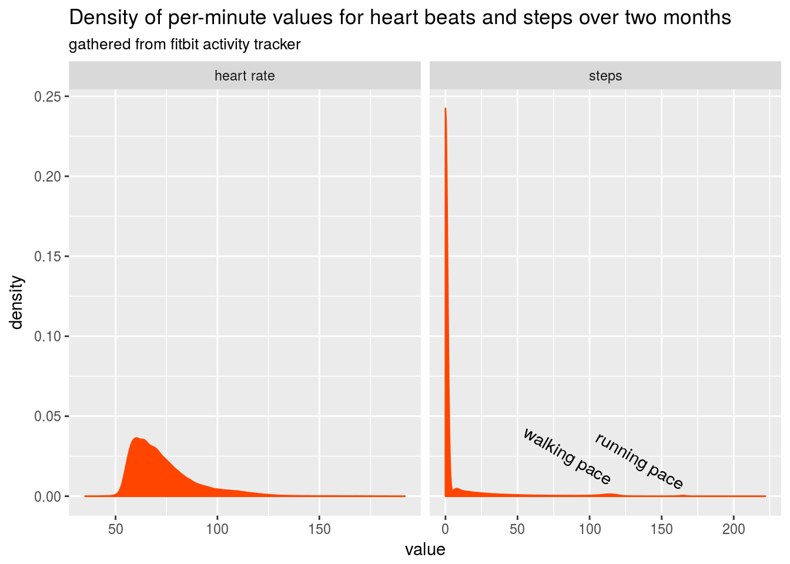
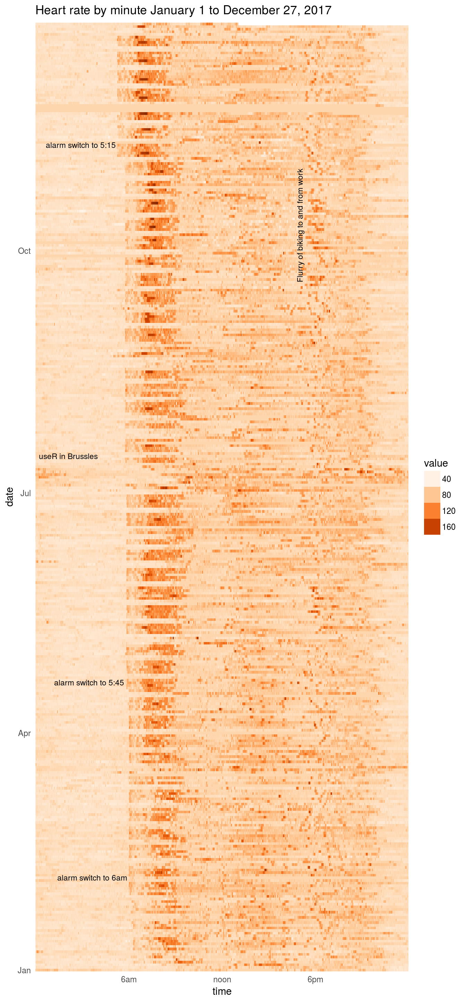
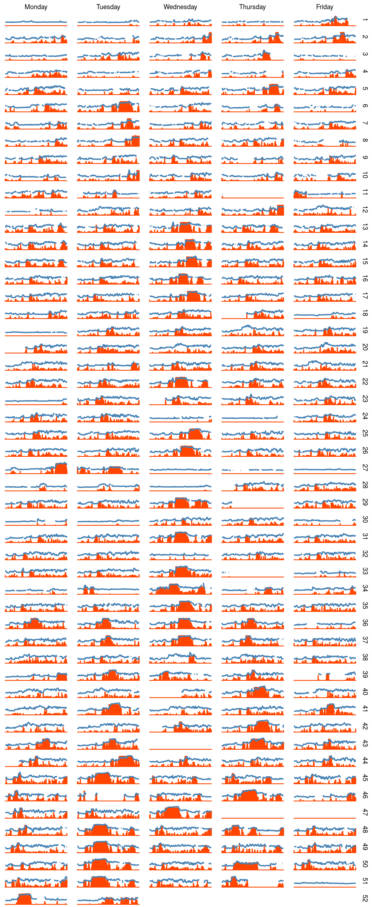
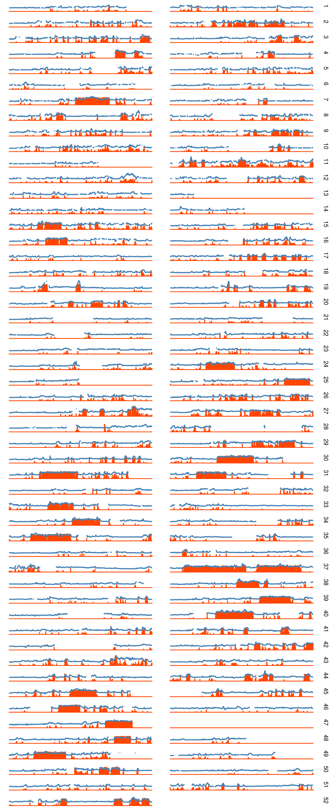
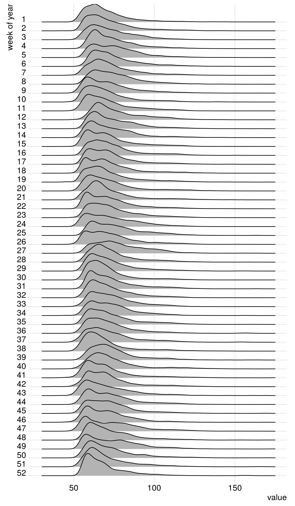
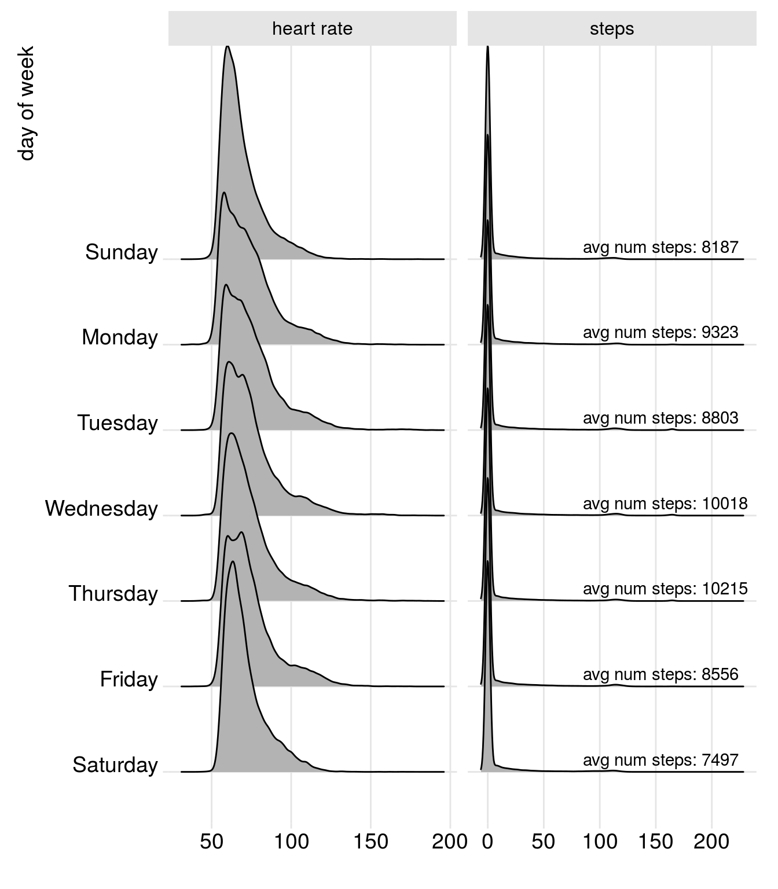

A year as told by fitbit
I managed to wear a fitbit the entirety of 2017, this is exciting for a few reasons: one I have commitment problems, and two: it’s a lot of data that I have to play with. While fitbit’s app has some nice pretty graphs, they make it rather hard to actually dump all of your data into something nice like a csv.
Over the summer I worked on a project with Jeff Leek at the Johns Hopkins Data Science Lab to crack open this fitbit data resource and get out nice tidy csvs of your data. While we have yet to fully release what we worked on I figured this post would be a demonstration of what one can do with the data from their fitbit and perhaps inspire others to explore their own data.
Loading the data
I dumped out six csv’s of my data because the fitbit API has a 150 query per hour limit, so I would go in and grab two months worth of heart rate and steps \(30 * 2 * 2 = 120\) in a go, drink some coffee and repeat. If I was smart I would have written a script that waited this time for me, but, I was already three timepoints in before realizing I should have and at that point premature optimization is the root of all evil
data_path <- function(months) paste0('../../static/fitbit_year/my_fitbit_data_', months, '.csv')
fitbit_data <- read_csv(data_path('nov-dec')) %>%
bind_rows(read_csv(data_path('sep-oct'))) %>%
bind_rows(read_csv(data_path('july-aug'))) %>%
bind_rows(read_csv(data_path('may-june'))) %>%
bind_rows(read_csv(data_path('march-april'))) %>%
bind_rows(read_csv(data_path('jan-feb'))) %>%
select(-X1) %>%
mutate(
day_of_week = lubridate::wday(date),
week_of_year = lubridate::week(date)
)
fitbit_data %>%
head() %>%
knitr::kable()| time | value | type | date | day_of_week | week_of_year |
|---|---|---|---|---|---|
| 0 | 57 | heart rate | 2017-12-26 | 3 | 52 |
| 60 | 56 | heart rate | 2017-12-26 | 3 | 52 |
| 120 | 57 | heart rate | 2017-12-26 | 3 | 52 |
| 180 | 57 | heart rate | 2017-12-26 | 3 | 52 |
| 240 | 56 | heart rate | 2017-12-26 | 3 | 52 |
| 300 | 57 | heart rate | 2017-12-26 | 3 | 52 |
The data we are looking to visualize has come to us in a tidy format, with a time column representing seconds into the day (date), and a numeric value corresponding to the measurement of a given type.
Let’s first look at some brief summaries of the data to make sure nothing is wrong.
fitbit_data %>%
group_by(type) %>%
summarise(
total = sum(value),
minimum = min(value),
mean = mean(value),
median = median(value),
maximum = max(value),
max_time = max(time)
) %>%
knitr::kable(digits = 3)| type | total | minimum | mean | median | maximum | max_time |
|---|---|---|---|---|---|---|
| heart rate | 35396998 | 35 | 73.300 | 69 | 192 | 86340 |
| steps | 3255136 | 0 | 6.287 | 0 | 222 | 86340 |
So from this simple summary we can see that our time column does appear to be what it should, starting at 0 and ending at \(60*60*(24 - 1) = 86340\), or seemingly every minute of a given day. Mean heart rate is 73 and mean steps per minute is 6. Median heart rate is 69 bpm and median steps are zero, or more than half the time I’m not moving at all.
Let’s take a quick look at the distributions of the contiguous variables to get a better picture than a simple mean and median can show.
annotations <- data_frame(
x = c(115, 165),
y = c(0.01,0.007),
label = c('walking pace', 'running pace'),
type = c('steps', 'steps')
)
fitbit_data %>%
ggplot(aes(value)) +
geom_density(fill = 'orangered', color = 'orangered') +
geom_text(data = annotations, aes(x = x, y = y, label = label), angle = -30, hjust = 1) +
facet_grid(.~type, scales = 'free_x') +
labs(title = 'Density of per-minute values for heart beats and steps over two months',
subtitle = 'gathered from fitbit activity tracker')
Interestingly the distribution for heart rate is semi-heavily right skewed. This is most likely due to the fact that most of the time when I am sleeping my heart rate will be in the lower part of the range, where as the rest of the day is more spread out from workout highs in the 160-180 range and sitting in the 60 range.
For the steps some more cool stuff pops out. For one, you can see I am very lazy, with most of the time I am not moving (steps per min = 0), but then we have a small body of low step numbers (0 - 50). These are most likely when I walk for only part of the minute to grab coffee or something. Much more interesting though is the two little bumps that occur further down the range. One potentially cool thing to do with these data is implement an expectation maximization algorithm to identify the different step modalities present in one’s day to day existance. The first and larger one is right around 115, this is my walking/ hiking pace. This spike is populated by the times that I am walking contiguously for a the full minute measured. The next spike is right at around 165 (I know this because I run to music at 165 bpm). This is populated by the times that I am running contiguously.
A year’s heart rate in one plot
Next, we can use a raster plot to plot all 500,000 heart rate measurements for the entire year at once. Since, sometimes the heart rate is missing for a minute or I took the fitbit off I have filled in the missing minutes with my median heart rate for the entire year.
annotations <- data_frame(
rotation = c(0, 0, 0, 0, 90),
x = c(4, 5.9, 5.7, 5.15, 17) * 3600,
y = as.Date(c("2017-07-15", "2017-02-05", "2017-04-20", "2017-11-10", "2017-11-01")),
label = c("useR in Brussles", "alarm switch to 6am", "alarm switch to 5:45", "alarm switch to 5:15", "Flurry of biking to and from work")
)
fitbit_data %>%
select(-day_of_week, -week_of_year) %>%
spread(type, value) %>%
mutate(`heart rate` = ifelse(is.na(`heart rate`), median(`heart rate`, na.rm = T), `heart rate`)) %>%
gather(type, value, -time, -date) %>%
filter(type == "heart rate") %>%
ggplot(aes(x = time, y = date)) +
geom_raster(aes(fill = value)) +
geom_text(data = annotations,
aes(x = x, y = y, label = label, angle = rotation),
hjust = 1, size = 3) +
scale_fill_gradientn(guide = "legend", colours = brewer.pal(n = 9, name = "Oranges")) +
theme_minimal() +
theme(
panel.grid.major = element_blank(),
panel.grid.minor = element_blank()
) +
scale_y_date(date_labels = "%b", expand = c(0, 0)) +
scale_x_continuous(breaks = c(6, 12, 18) * 3600, labels = c("6am", "noon", "6pm"), expand = c(0, 0)) +
labs(title = "Heart rate by minute January 1 to December 27, 2017")
A few things pop out immediately here. First, you can see me slowly inching my alarm earlier as the year goes on. It started at around 6:30 and I managed to get it down to 5:15 by the end of the year. You can see the weekends as breaks in the hard alarm-time.
There is a general band of activity that happens just after noon and then another just after six. This usually corresponds to lunch and then leaving school for the day. Of course all my diligence for alarm times goes to heck when the useR 2017 happened in Brussels.
Exercise patterns throughout the year
Generally I workout sometime between 6 and 9 am Monday through Friday, let’s see if we can observe this in the data. To do so we will restrict our data to be between 6 and 8:30 am and only look at the weekdays (since I don’t go to the gym on the weekends.)
This time we will leave in the step data and use a line plot for heart rate. We will be pushing the amount of data we should display this way but it may be interesting.
between_six_nine <- function(time) time > 6*60*60 & time < 8.5*60*60
is_weekday <- function(day_of_week) day_of_week %in% 2:6
fitbit_data %>%
filter(between_six_nine(time) & is_weekday(day_of_week)) %>%
spread(type, value) %>%
mutate(day_of_week = factor(day_of_week,
labels = c('Monday', 'Tuesday', 'Wednesday', 'Thursday', 'Friday'),
levels = 2:6)) %>%
ggplot(aes(x = time)) +
geom_bar(aes(y = steps), color = 'orangered', alpha = 0.3, stat = 'identity') +
geom_line(aes(y = `heart rate`), color = 'steelblue', size = 0.8) +
facet_grid(week_of_year ~ day_of_week) +
theme_void() 
You can see when I switched my run days (seen as the large red blocks of steps) from Wednesday to Tuesday and Thursday. In addition, if you look closely you can see the distinct pattern of my steps to the gym from my car.
Another type of workout my girlfriend and I like to do is hikes on the weekends. We started doing this much more frequently as the year went on. Again let’s subset our data to see if we can observe this.
between_seven_two <- function(time) time > 7*60*60 & time < 14*60*60
fitbit_data %>%
filter(between_seven_two(time) & !(is_weekday(day_of_week))) %>%
spread(type, value) %>%
mutate(
day_of_week = factor(day_of_week,
labels = c('Saturday', 'Sunday'),
levels = c(7,1))) %>%
ggplot(aes(x = time)) +
geom_bar(aes(y = steps), color = 'orangered', alpha = 0.3, stat = 'identity') +
geom_line(aes(y = `heart rate`), color = 'steelblue', size = 0.8) +
facet_grid(week_of_year ~ day_of_week) +
theme_void()
You can see that in the later half of the year we started doing hikes much more frequently.  In addition, in week 37 we did a hike at the fiery gizzard trail in South Tennessee.
In addition, in week 37 we did a hike at the fiery gizzard trail in South Tennessee.
Did I get fitter over the year?
Looking at the path of median or mean heart rate over a year really only tells part of the story for fitness. For instance, if you exercised a lot you would have a higher average (and potentially median) heart rate but may have a lower resting heart rate. This is a great instance where visual inspection of a distribution can give a better picture than any statistical summary could. Ideally what I would like to see is the development of a bi modal distribution with the larger and lower modality getting lower (resting heart rate is decreasing) and a smaller higher bump getting larger as the year goes on (I’m exercising more).
To look at this we will use the wonderful ggridges package to look at the distribution of heart rate readings over the year by week.
library(ggridges)
fitbit_data %>%
mutate(`week of year` = fct_rev(as.factor(week_of_year))) %>%
filter(type == 'heart rate') %>%
ggplot(aes(x= value, y = `week of year`)) +
geom_density_ridges(scale = 2.5) +
xlim(30, 175) +
theme_ridges()
So, I do see a slight decrease in the lower level and perhaps a bit more bimodality happening as the year goes on. I added more cardiovascular workouts in the later half of the year which explains part of this. Still though, it would be nice if the signal was a little stronger. Oh well, next year.
What day of the week was my most most active?
step_counts <- fitbit_data %>%
filter(type == 'steps') %>%
group_by(day_of_week) %>%
summarise(
type = last(type),
avg_num_steps = sprintf('avg num steps: %3.0f', sum(value)/52)
)
library(ggridges)
fitbit_data %>%
mutate(
`day of week` = fct_rev(factor(day_of_week,
labels = c('Sunday', 'Monday', 'Tuesday', 'Wednesday',
'Thursday', 'Friday', 'Saturday'),
levels = 1:7))) %>%
ggplot(aes(x= value, y = `day of week`)) +
geom_density_ridges(scale = 2.5) +
geom_text(data = step_counts, nudge_y = 0.15, hjust = 0,
aes(x = 85, y = day_of_week, label = avg_num_steps)) +
facet_grid(.~type, scales = "free") +
theme_ridges() +
labs(x = '')
So in terms of steps, there is no noticeably difference noticeably changes, however, we do see that both Saturday and Sunday have by far the most unimodal (see lazy) distribution of heart rates. Thursday also surprisingly has a rather unimodal shape. Usually this is a day that I would do lower intensity cardio work, perhaps I need to up the intensity a bit.
Takeaway
It’s easy to dismiss the amount of data we gather about ourselves, but by wearing a fitbit for a year I have managed to gather one million observations of data for just heart rate and steps counts. Even more if I had pulled at the second level for heart rate.
The amount of data that is generated by any one of is is astounding, and it’s easy to not see any of it. In 2018 one of my goals will be to try and ‘take back’ this data on myself and explore it for personal gain. For instance, this year, while I worked out much more consistently than in years past, I didn’t make massive improvements in my fitness levels. This is something that I wouldn’t notice if I just looked at the limited graphs that fitbit gives you in their app.
Want to do this yourself?
While this post was rather self-centered the point was more to show others what they can do with their own data. If you own a fitbit and are interested in easily gathering this data for your own activity stay tuned to my and Jeff Leek’s twitters. We will soon be launching an application that allows you to easily download your own fitbit data and if you want, donate it for research purposes (think DNA Land but for fitbits).
If you are a more hands on person, there is a sparsely documented API that you can use at the fitbit dev site. In addition, the underlying library that Jeff and I are using for our application is hosted on the Johns Hopkins Data Science Lab github. Fair warning: our library has even worse documentation than the fitbit api.

Randomly walking my way though a career in statistics